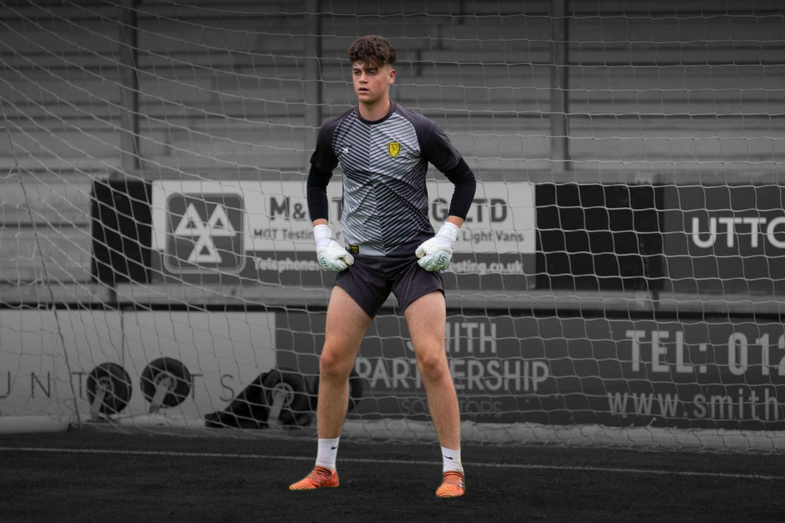

Home
About us
Get Scouted
Latest News
Contact us


Route One Sports Management
Player Representation
Route One Sports Management are a team of UK Football Agents, FA Registered Intermediaries, and Scouts. Together they provide a professional UK based football agency. With a large network of contacts throughout the football industry, they can ensure you are always at the right club for you and your career. They successfully represent professional football players that play in the Premier League, English Football League, and the National League. Their clients also include Academy Scholars who are supported with full mentorship and guidance throughout the transition from scholar to full time professional.

While specialising in contract negotiations they are able to help ensure clients get the very best contract and sponsorship deal. They provide a range of lifestyle management services that include, financial advisors and investment property management. These off the pitch services are designed for professional football players to concentrate on their career on the pitch. If you're looking for a new UK football agent and representation contact Route One Sports Management.
FA Registered Intermediaries
Are you looking for a professional team of FA Registered Intermediaries and Scouts to help boost your football career.
Route One Sports Management provide a complete intermediary service that is ideal for players who are at the following stages of their career.
- Are you looking for new intermediary representation.
- Are you a professional footballer looking for a new club.
- Are you ready to negotiate a new contract.
- Are you a scholar looking for your first professional contract.
- Are you a semi pro that wants to go full time professional.
- Are you looking to go into media or management.
Whatever your situation may be, Route One Sports Management can help you transition through onto the next phase of your career. For more information about the complete range of UK football agent and intermediary services please contact Route One Sports Management today.
Site Menu
About us
Get Scouted
Latest News
Contact us
Sitemap
Route One Sports Management © 2021